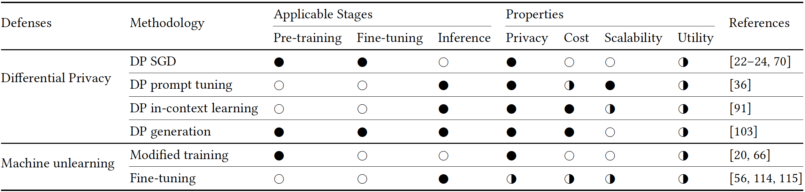

Attacks

Figure 8. The taxonomy of privacy-related attack methods for LLMs.

Table 8: Summarization of existing attacks on LLMs.
Black-box/white-box: ○=white-box, ◑=gray-box, ●=black-box.
Cost: ○=high, ◑=moderate,●=low
Privacy/Scalability/Utility: ○=poor, ◑=moderate, ●=good.
Takeaways (Data Extraction Attack):
The effectiveness of data extraction attacks depends on several factors: the inherent memorization ability of language models (e.g., scaled with model size), the strategic crafting of prompts (e.g., context length and the use of jailbreaking prompts), and training data distribution (like repeated or poisoned data). While alignment techniques are successful in guiding LLMs to avoid producing sensitive information, they do not eliminate memorization and can be easily bypassed using jailbreaking prompts.
Takeaways (Membership Inference Attacks):
Membership inference attacks could happen in different stages of LLM lifecycle despite the number of member/training samples. When attacking LLMs, using difficulty calibration is more effective than merely thresholding the outputs of LLMs.
Takeaways (Jailbreaking):
Manually crafted jailbreaking prompts, although straightforward and convenient to use, tend to lose their effectiveness rapidly due to the swift evolution of LLMs. In contrast, methods that automatically generate jailbreaking prompts offer greater resilience against these updates, albeit at the cost of increased computational demands.
Takeaways (Jailbreaking - Additional):
As the size of LLMs increases, there is a decrease in their susceptibility to jailbreaking, likely due to more rigorous policy-related instruction tuning.
Defenses

Figure 9. The taxonomy of privacy-related defense methods for LLM.
Table 9: Summarization of existing defenses on LLMs.
Applicable stages: ○=non-applicable, ●=applicable.
Privacy/Scalability/Utility: ○=poor, ◑=moderate, ●=good.
Cost: ○=high, ◑=moderate,●=low
Takeaways:
Implementing exact machine unlearning in LLMs necessitates altering their training process, a strategy currently impractical due to the substantial computational demands of these models. In contrast, approximate machine unlearning presents a more feasible approach, typically accomplished by fine-tuning the LLMs with a specific, tailored objective.
PII types defined for scrubbing defense
| Abbreviation | Definition |
|---|---|
| CARDINAL | A numerical quantity or value, e.g., 1,2. |
| DATE | A date. |
| FAC | A specific building or facility. |
| GPE | A geopolitical entity. |
| LANGUAGE | A natural language, such as English or Spanish. |
| LAW | A legal document, such as a law or treaty. |
| LOC | A general location, such as a mountain range or body of water. |
| MONEY | A monetary value, such as a dollar amount or currency symbol. |
| NORP | A national or religious group, such as 'the French' or 'the Muslim community'. |
| ORDINAL | A numerical ranking or position, such as 'first', 'second', or 'third'. |
| ORG | An organization, such as a company or institution. |
| PERCENT | A percentage value, such as '50%' or '75%'. |
| PERSON | A specific individual or group of people, such as a celebrity or family. |
| PRODUCT | A specific product or brand, such as a car or electronics. |
| QUANTITY | A quantity, such as '12 ounces' or '3 meters'. |
| TIME | A specific time of day or duration, such as '3:00 PM' or 'three hours'. |
| WORK_OF_ART | A creative work, such as a book, painting, or movie. |
| EVENT | A specific event or occurrence, such as a concert or sports game |
Definitions are from Lukas et al., 2023.